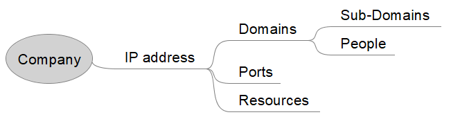
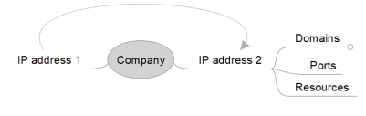
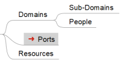

Freemind: mindmapping (Individual)
While pentesting we can use mindmapping to visually
organize information
For mindmapping we can use:
•
Free Mind•
Xmind
Relationships
If an IP host multiple domains we can link them with an arrow → select them, right click,
Insert->Add Graphical Link

Conventions
By using icons can help us to visualize the map better. Is possible to associate icons to every node
of the map.
Because there aren't a lot icons we can add more icons to the default ones follow this
trick:
1. Open the freemind.jar with Winrar or any other similar tool.
2. Extract it
3. Find the
folder \images\icons and add your new icons there
4. Re-package the whole folder again (you will create a .rar
file that will have to be renamed again into a freemind.jar)
Files
With the software Freemind we can combine Spreadsheet and Mindmap together by link a file to node. To
do that right click on a node, Insert->Hyperlink (File chooser).
In this way we click one
little arrow that is appeared near the node the linked file will be opened.
In this way we will have the best from the
two world:
• the verbosity of the
Form approach
• the beauty of having everything at a
glance of the
mindmap